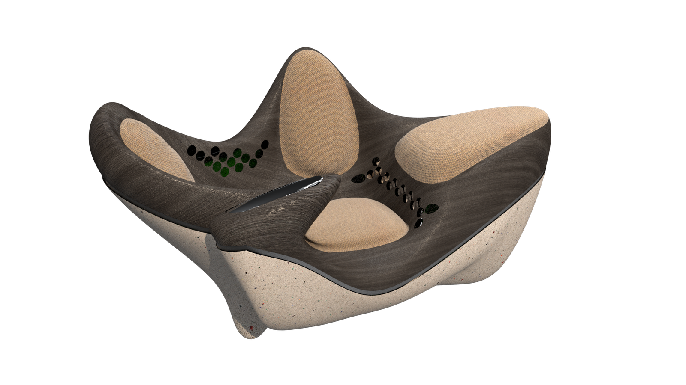

Retroscent: FURNITUR 2023 Ödüllü Oturma Ünitesi
Organik formlu, karma malzemeli bir oturma ünitesi. Türkiye Tasarım Vakfı'nın FURNITUR 2023 yarışmasında ödül ve mansiyon kazandı.
Bu bölüm dürüstçe eksik
Final tasarımdan gözlemlenebilenler
Sürecin belgeleri olmasa da, final tasarımın kendisi bazı kriterleri açıkça gösteriyor: birden fazla malzeme bölgesinin (doku kaplı kabuk, pürüzlü taban, yumuşak döşeme) tek bir organik formda bir araya getirilmesi, oturma yüzeyinin ergonomik olarak ayrışan bölmelere sahip olması.
Organik form, üç malzeme bölgesi
Form, keskin geometrik yüzeyler yerine akışkan, biyomorfik bir dil kullanıyor. Gövde üç farklı malzeme karakterini bir araya getiriyor: sert ve doku kaplı bir dış kabuk, pürüzlü/beton görünümlü bir taban ve yumuşak kumaş döşemeli oturma bölgeleri.
Yüzey sürekliliği
Ortografik/wireframe görünüm, formun tek bir sürekli yüzeyden nasıl türetildiğini gösteriyor. Sert köşe yok, tüm geçişler yumuşak eğrilerle çözülmüş.

Üç malzeme, tek gövde
Kabuk, taban ve döşeme bölgeleri arasındaki geçişler, ayrı parçalar değil aynı yüzeyin devamı olarak tasarlandı. Perfore desen (dairesel delikler), kabuk yüzeyinde hem dekoratif hem de muhtemelen hava geçirgenliği amaçlı bir detay olarak yer alıyor.

Üretim notasyonu
Final aşamada, formun üretim mantığını özetleyen görsel bir notasyon paftası da hazırlandı.

Sonuç

FURNITUR 2023, Ödül ve Mansiyon
Retroscent, Türkiye Tasarım Vakfı'nın düzenlediği FURNITUR 2023 yarışmasında ödül ve mansiyon kazandı. Bu proje, sürecin her adımının belgelenmediği ama sonucun doğrulanabilir olduğu bir örnek: ödül gerçek, jüri değerlendirmesi gerçek.